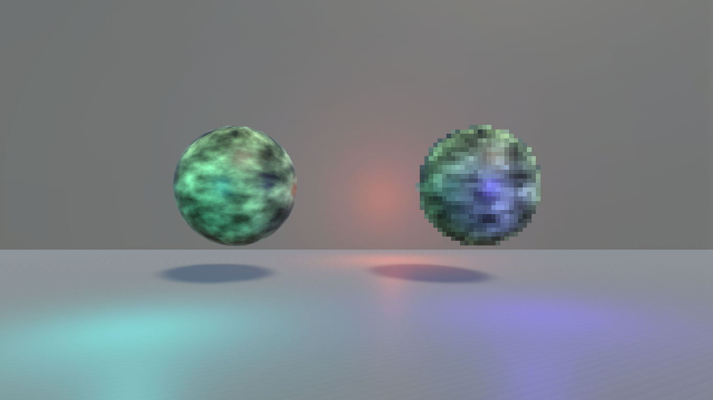

A stencil based post-processing effect that gives specific objects in a scene a pixelated look, without needing special materials or rendering the whole game at a lower resolution.
As an example of how this was done, we have this source scene, which is rendered normally up until the post-processing step

Every object that will be pixelated writes to the stencil buffer during the render process, which means at the end of the rendering pipeline, we get a mask of these objects in the frame, including depth testing and culling

This mask is then downscaled together with the color buffer, which will pixelate all objects, and give us an image source to overlay on top of the original frame
The original stencil mask is then added to this pixel mask, this is done to get the silhouette of the object to be very sharp. If we didn't do this, we would end up with a round cut of the pixelated color buffer, which would look out of place

Now, with this mask done and the pixelated color buffer, we can apply this mask to it and overlay the result on top of the camera buffer

After this we can post-process and tone map as usual, giving us the final frame
